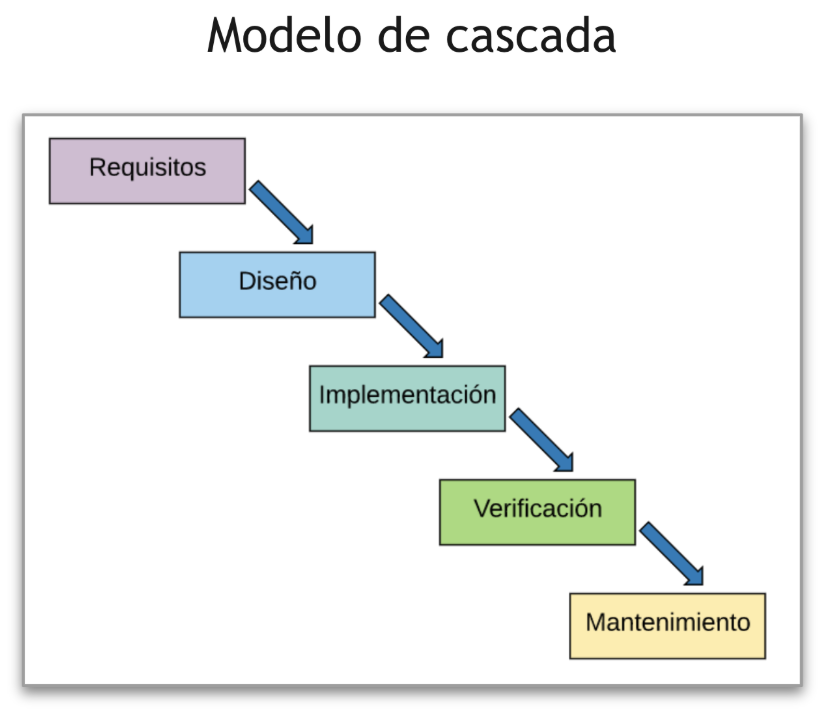
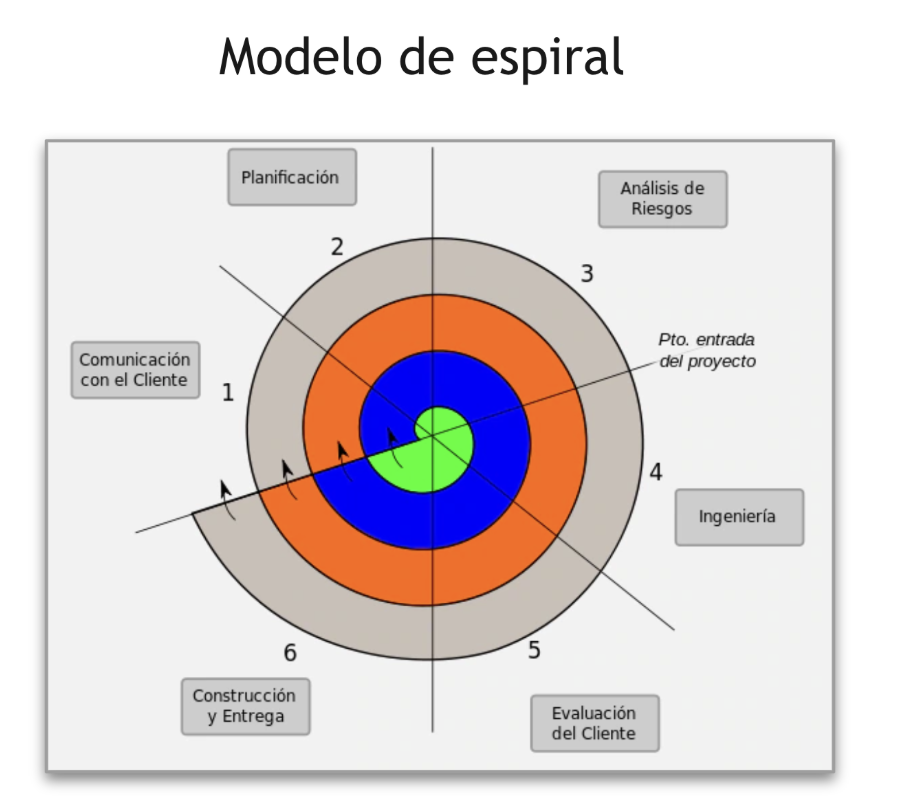
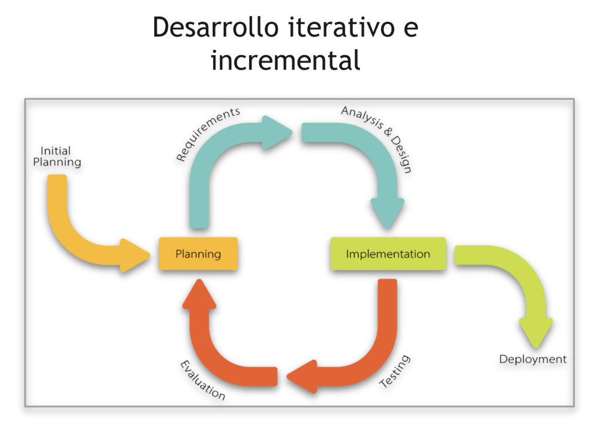
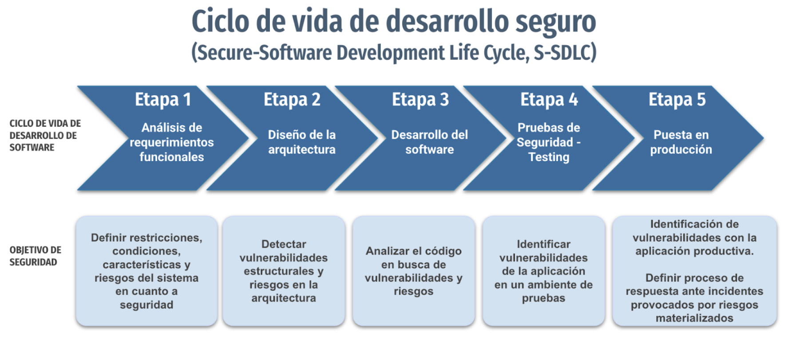
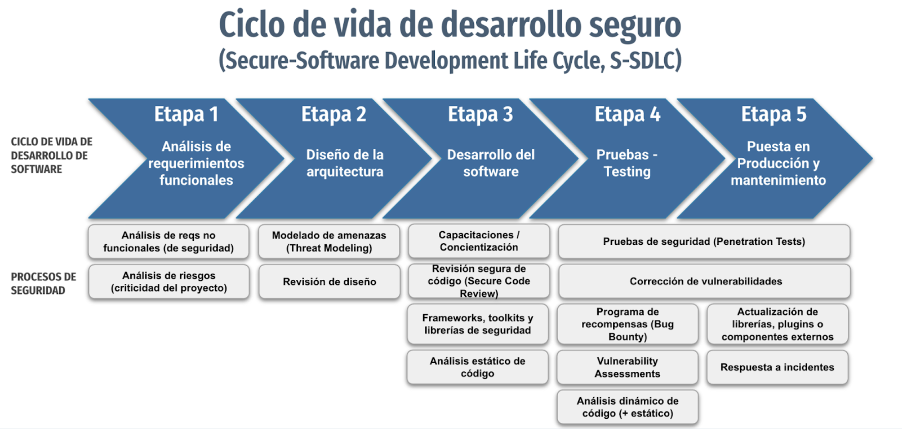
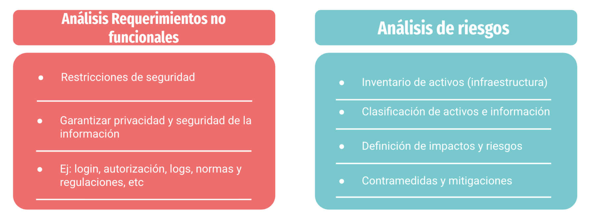
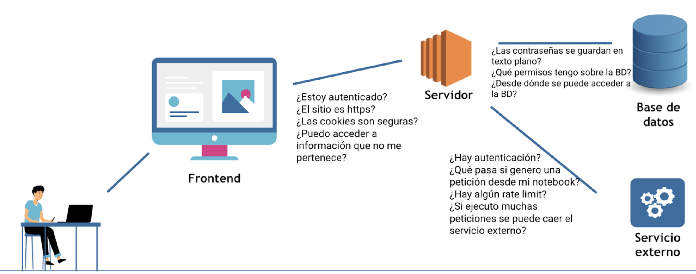

Clase 11 — Seguridad Aplicativa
Módulo: Ciberseguridad
¿Qué es la seguridad aplicativa?
Es la rama de la ciberseguridad que incluye prácticas, controles y procesos destinados a proteger las aplicaciones contra amenazas, vulnerabilidades y ataques que puedan comprometer la tríada CIA de los datos y las funciones que manejan.
Se centra en el código, la lógica de negocio y las dependencias de una aplicación, tanto en tiempo de desarrollo como en tiempo de ejecución.
Medidas típicas: - Validación y saneamiento de entradas - Gestión de autenticación, sesiones y credenciales - Control de acceso y autorización - Cifrado de datos sensibles - Pruebas de seguridad - Actualización y gestión de dependencias de terceros (supply chain security)
Tipos de aplicaciones
Web (backend/frontend): diseñadas para ser accedidas a través de un navegador o mediante APIs REST. Desarrolladas en Go, Java, JavaScript, Python, Node, etc.
Móviles (nativas/híbridas): diseñadas para dispositivos móviles. Nativas: Kotlin, Java (Android), Swift (iOS). Híbridas: incluyen componentes en JavaScript.
Tríada CIA en el contexto del software
Cada principio se aborda con prácticas específicas:
Confidencialidad — Amenaza: filtración o robo de datos - Control de acceso y autenticación robusta (MFA, OAuth 2.0) - Cifrado de datos en tránsito y en reposo (TLS, AES) - Gestión segura de sesiones y tokens - Principio de mínimos privilegios en la lógica de la aplicación - Anonimización y tokenización de información sensible
Integridad — Amenaza: manipulación o corrupción de datos - Firmas digitales y hashes para datos y archivos - Controles de entrada y validación de datos - Gestión de versiones y auditorías - Logs y trazabilidad de cambios y acciones
Disponibilidad — Amenaza: caídas o denegación de servicio - Manejo de errores y excepciones - Protección contra DoS/DDoS - Copias y planes de recuperación - Escalabilidad y monitoreo - Actualizaciones seguras sin interrupción de servicio
SDLC — Ciclo de Vida de Desarrollo de Software
Antes de hablar de seguridad en el desarrollo, hay que entender cómo se organiza el proceso de desarrollo en sí. Hay varias modalidades.
Modelo en cascada

Proceso secuencial y lleno de aprobaciones. Cada fase debe completarse antes de pasar a la siguiente.
- Recolección y análisis de requisitos: identificar qué debe hacer el sistema, qué datos manejará y qué restricciones existen. Resultado: documento de requisitos aprobado.
- Diseño del sistema: definir cómo se construirá — arquitectura, módulos, base de datos, interfaces. Diseño técnico detallado como guía para los programadores.
- Implementación: los desarrolladores escriben el código fuente siguiendo el diseño. Pruebas unitarias por módulo.
- Validación: integración de módulos y pruebas funcionales, de integración y de aceptación. Luego despliegue en el entorno real.
- Mantenimiento: correcciones, actualizaciones y mejoras post-entrega.
Limitación de seguridad: los controles de seguridad se aplican tardíamente (en validación), cuando corregirlos es más costoso.
Modelo espiral (1986)

Evolución del modelo en cascada. En cada "vuelta" se desarrolla un incremento del sistema, con foco en análisis y mitigación de riesgos.
- Determinación de objetivos y planificación: definir qué parte del sistema se desarrolla en esta iteración.
- Análisis y evaluación de riesgos: identificar riesgos técnicos, de costos y de requisitos. A veces se desarrolla un prototipo para reducir incertidumbre.
- Desarrollo y validación: diseño, codificación y prueba del incremento.
- Revisión y planificación del siguiente ciclo: el cliente y el equipo revisan resultados y deciden si continuar, modificar o detener.
Modelo iterativo-incremental

Combina dos enfoques: - Iterativo: el sistema se desarrolla en ciclos repetitivos donde cada uno mejora lo existente. - Incremental: en cada iteración se agregan nuevas funcionalidades hasta completar el sistema.
El producto se construye por partes y cada parte se mejora progresivamente con el tiempo.
Cada iteración pasa por análisis, diseño, implementación y prueba. La retroalimentación del cliente es continua.
SSDLC — Ciclo de Vida del Desarrollo Seguro de Software
El SSDLC integra controles de seguridad en cada fase del SDLC, en lugar de agregarlos al final. Es la implementación del principio Shift Left: mover la seguridad hacia las etapas más tempranas del desarrollo, donde corregir vulnerabilidades es significativamente más barato.


Principios base
Secure by Design: la seguridad se incorpora desde las decisiones de arquitectura — no es un agregado posterior. Implica diseñar sistemas que sean seguros por defecto, que fallen de forma segura y que apliquen defensa en profundidad.
Shift Left: en lugar de testear seguridad sólo al final, se integran controles desde los requisitos. Una vulnerabilidad encontrada en producción puede costar 100x más que una encontrada en diseño.
Threat Modeling: práctica que consiste en analizar el diseño de una aplicación para identificar amenazas potenciales antes de escribir código. Se definen activos, actores maliciosos, vectores de ataque y controles.
Fases del SSDLC
Análisis de Requerimientos — Análisis de riesgos: Los requerimientos de seguridad no son requisitos funcionales de la aplicación — son medidas para reducir impacto económico o reputacional. En esta etapa se identifican los activos a proteger, los riesgos y los requisitos de seguridad derivados.

Diseño de arquitectura — Threat Model: Se aplica el threat modeling para detectar vulnerabilidades estructurales antes de que se escriba código. Se evalúan flujos de datos, superficies de ataque y controles de acceso.

Desarrollo: - Code Review / Revisión de código: revisión humana del código en busca de vulnerabilidades (SQL injection, datos sensibles expuestos, lógica de autorización incorrecta). - Frameworks y librerías seguros: usar herramientas con mantenimiento activo. No reinventar la rueda en criptografía o autenticación. Gestionar dependencias activamente. - Capacitaciones: los desarrolladores deben conocer las vulnerabilidades comunes (OWASP Top 10).
Testing — Pruebas de seguridad: Ver sección SAST/DAST/Pentesting más abajo.
SAST, DAST y Pruebas de Seguridad
SAST — Static Application Security Testing
- Caja blanca: analiza el código fuente sin ejecutar la aplicación.
- Encuentra vulnerabilidades en etapas tempranas del desarrollo.
- Los hallazgos son más baratos de corregir.
- Ejemplos de herramientas: Veracode, SonarQube, Semgrep.
DAST — Dynamic Application Security Testing
- Caja negra: valida inputs y outputs — no lee el código.
- Requiere que la aplicación esté ejecutándose.
- Se ejecuta en etapas más tardías.
- Los hallazgos son más costosos de mitigar.
- Encuentra vulnerabilidades en tiempo de ejecución — fallos de configuración, exposición de datos, comportamiento inesperado bajo inputs maliciosos.
Comparativa SAST vs DAST
| SAST | DAST | |
|---|---|---|
| Tipo | Caja blanca | Caja negra |
| Acceso al código | Sí | No |
| Cuándo se ejecuta | Durante el desarrollo | Con la app corriendo |
| Tipo de hallazgos | Vulnerabilidades en código | Vulnerabilidades en ejecución |
| Costo de remediación | Bajo | Alto |
Pentesting y Vulnerability Assessment
Pentesting: el objetivo es explotar una funcionalidad específica para demostrar que una vulnerabilidad es real y tiene impacto. Simula a un atacante real.
Vulnerability Assessment (VA): el objetivo es identificar todas las vulnerabilidades posibles sin necesidad de explotarlas. Más amplio que el pentesting, menos profundo.
Bug Bounty: similar al pentesting pero con un scope definido y abierto a investigadores externos. Todo lo que encuentran dentro del alcance se considera una vulnerabilidad válida. Los investigadores reciben recompensas por hallazgos.
Pipelines y DevSecOps
En los últimos años el proceso de desarrollo se fue automatizando a través de pipelines (CI/CD). Con la filosofía de DevOps, el código que va a un repositorio (GitHub, GitLab) pasa por una serie de pasos automatizados que incluyen compilación, pruebas, análisis de seguridad y despliegue.
DevSecOps integra la seguridad dentro del pipeline de CI/CD, de forma que los controles de seguridad sean automáticos y continuos — no manuales ni ocasionales.
Etapas del pipeline
Integración Continua (CI): - Detecta cambios en el código. - Ejecuta pruebas unitarias y de integración. - Ejecuta SAST y análisis de dependencias (SCA). - Asegura que el sistema siempre compile y funcione.
Entrega Continua (CD — Delivery): - Prepara la versión para despliegue (build + empaquetado). - Automatiza la entrega en entornos de prueba. - Ejecuta DAST en el entorno de staging.
Despliegue Continuo (CD — Deploy): - Lleva el software automáticamente a producción. - Puede requerir aprobación manual o ser 100% automático.
Monitoreo y feedback: - Supervisa rendimiento y errores post-despliegue. - Retroalimenta al equipo para la siguiente iteración.
Seguridad en el pipeline
Herramientas que se integran en el pipeline: - SAST: análisis estático en cada commit. - SCA (Software Composition Analysis): detecta dependencias con vulnerabilidades conocidas. - DAST: análisis dinámico en entornos de prueba. - Secrets scanning: detecta credenciales o API keys hardcodeadas en el código. - Container scanning: analiza imágenes Docker en busca de vulnerabilidades.
OWASP Top 10 (2025)
El OWASP Top 10 es una lista de las diez categorías de vulnerabilidades más críticas en aplicaciones web, publicada por la Open Worldwide Application Security Project. Es el estándar de referencia de la industria para seguridad aplicativa. La edición 2025 fue publicada en noviembre de 2025 — la primera actualización desde 2021. Se basa en el análisis de 589 CWEs y datos de más de 2,8 millones de aplicaciones.
A01 — Broken Access Control (Control de acceso roto)
Los usuarios pueden realizar acciones fuera de los permisos que les corresponden. En 2025 esta categoría absorbe también SSRF — que en el fondo es un fallo de control de acceso donde el servidor hace solicitudes a recursos no autorizados.
Ejemplo: un usuario común puede acceder a /admin sólo cambiando la URL. O un formulario que permite pedir http://localhost:8080/admin usando el servidor como proxy.
Mitigación: aplicar el principio de menor privilegio, validar permisos en el backend (no sólo en el frontend), usar controles de autorización centralizados, restringir URLs de salida del servidor.
A02 — Security Misconfiguration (Mala configuración de seguridad)
El software, los servidores o los frameworks se dejan con configuraciones por defecto o inseguras.
Ejemplo: panel de administración público sin autenticación, mensajes de error que exponen stack traces, IAM de cloud demasiado permisivo, buckets S3 públicos, credenciales por defecto no cambiadas.
Mitigación: hardening de configuraciones, eliminar servicios no usados, automatizar verificación de configuraciones en el pipeline, revisar políticas IAM cloud.
A03 — Software Supply Chain Failures (Fallos en la cadena de suministro de software)
El riesgo ya no es sólo usar dependencias con CVEs conocidos — cubre todo el proceso de adquisición, build y distribución del software. Incluye typosquatting, dependency confusion, build servers comprometidos y dependencias transitivas maliciosas.
Ejemplo: usar una versión vulnerable de Log4j (vuln: Log4Shell). O una dependencia npm con un typosquatting que instala malware en lugar del paquete legítimo.
Mitigación: mantener dependencias actualizadas, SCA (Software Composition Analysis), generar un SBOM (Software Bill of Materials), verificar firmas de artefactos, restringir registros de paquetes.
A04 — Cryptographic Failures (Fallos criptográficos)
Los datos sensibles (contraseñas, tokens, información personal) se exponen por un mal uso o ausencia de cifrado.
Ejemplo: almacenar contraseñas sin hash, o transmitir datos con HTTP en lugar de HTTPS.
Mitigación: usar algoritmos modernos (AES, bcrypt/Argon2 para contraseñas), TLS para comunicaciones, no implementar criptografía propia.
A05 — Injection (Inyección)
Ocurre cuando datos no validados se interpretan como comandos o consultas por el sistema.
Ejemplo SQL Injection:
Mitigación: usar consultas parametrizadas, sanitizar entradas, usar ORMs seguros.
A06 — Insecure Design (Diseño inseguro)
Vulnerabilidades derivadas de decisiones de diseño poco seguras, incluso antes de escribir código.
Ejemplo: una aplicación que no contempla límites de intentos de login — permite fuerza bruta sin restricción.
Mitigación: aplicar threat modeling y principios de security by design desde la etapa de análisis.
A07 — Authentication Failures (Fallos en autenticación)
Errores que permiten suplantar usuarios o evadir controles de autenticación.
Ejemplo: contraseñas débiles permitidas, tokens de sesión sin expiración, bypass de login por lógica incorrecta.
Mitigación: MFA, gestión segura de sesiones, políticas de contraseña robustas.
A08 — Software or Data Integrity Failures (Fallos en integridad de software o datos)
El sistema ejecuta código o datos no verificados — sin comprobar su origen o integridad.
Ejemplo: una aplicación que descarga e instala actualizaciones sin verificar la firma digital. Un pipeline CI/CD que ejecuta código de una fuente no verificada.
Mitigación: usar firmas digitales para verificar integridad de código y dependencias, aplicar CI/CD seguros.
A09 — Security Logging and Alerting Failures (Fallas en registro y alertas)
Falta de registros o alertas que permitan detectar y responder a incidentes.
Ejemplo: ataques repetidos de login sin que se registren ni generen alertas. Un atacante puede permanecer en el sistema semanas sin ser detectado.
Mitigación: logging centralizado, alertas sobre anomalías, planes de respuesta a incidentes.
A10 — Mishandling of Exceptional Conditions (Manejo incorrecto de condiciones excepcionales)
El sistema no maneja correctamente situaciones anómalas o inesperadas — expone información, falla de forma insegura o permite comportamientos no previstos.
Ejemplo: una excepción no capturada que expone un stack trace con rutas internas y versiones de librerías. Una race condition que permite doble débito en una transacción. Un error de lógica que "falla abierto" — otorga acceso en lugar de denegarlo ante una condición inesperada.
Mitigación: políticas explícitas de manejo de excepciones, no exponer detalles de errores al cliente, checklist de edge cases en code review, pruebas de condiciones de error.
Conceptos clave de esta clase
- Seguridad aplicativa: proteger el código, la lógica y las dependencias — en desarrollo y en ejecución.
- Tríada CIA en software: confidencialidad (cifrado, acceso), integridad (hashes, validación), disponibilidad (resiliencia, monitoreo).
- SDLC: cascada (secuencial), espiral (iterativo con gestión de riesgos), iterativo-incremental (increments + feedback continuo).
- SSDLC: seguridad integrada en cada fase. Shift Left: encontrar vulnerabilidades temprano es más barato.
- Secure by Design / Threat Modeling: la seguridad se diseña, no se agrega.
- SAST: caja blanca, código estático, etapa temprana. DAST: caja negra, app corriendo, etapa tardía.
- DevSecOps: seguridad integrada en el pipeline CI/CD — SAST, SCA, DAST, secrets scanning automatizados.
- OWASP Top 10 (2025): A01 (acceso+SSRF), A02 (misconfiguration), A03 (supply chain — nuevo), A04 (cifrado), A05 (inyección), A06 (diseño), A07 (autenticación), A08 (integridad), A09 (logging+alerting), A10 (exceptional conditions — nuevo).
Para la próxima clase
IA Security Parte 1: ataques a modelos de machine learning — adversarial attacks, model inversion, data poisoning.
Fuentes
- OWASP Top 10 (2025) — https://owasp.org/Top10/2025/
- OWASP Top 10 (2021, archivado) — https://owasp.org/Top10/2021/
- OWASP — Software Assurance Maturity Model (SAMM) — https://owaspsamm.org
- McGraw, G. — Software Security: Building Security In